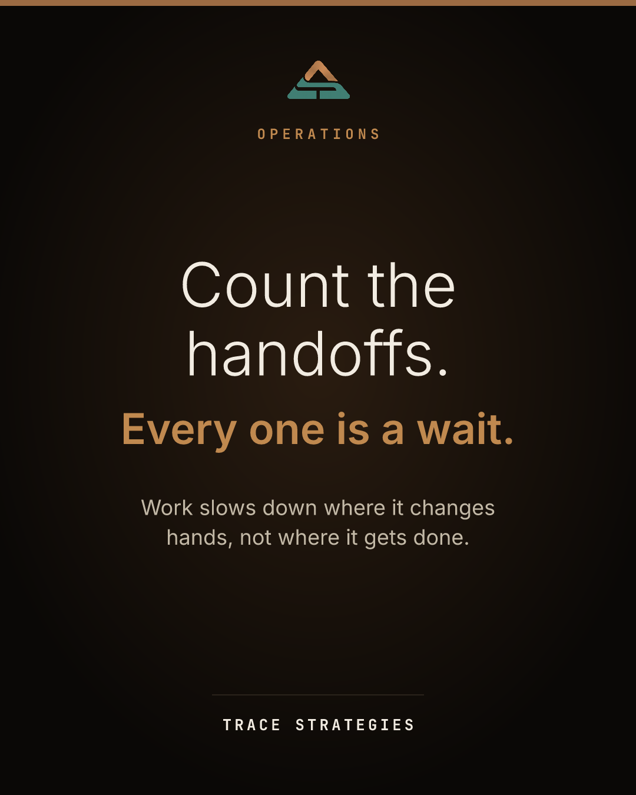

Tue, Sep 22Count the handoffs.practice

Drag the image into the post, or find it in the posts folder as 2026-09-22-count-the-handoffs.png
Pick one process you run every week. Follow a single request from start to finish and count how many times it changes hands. Every handoff is a place where work sits and waits. Someone has to notice it arrived, understand it, and pick it up. Most delays live there, not in the work itself. For each handoff, ask one question: does this step add something the customer would pay for? If not, it is a candidate to cut or combine. Fewer handoffs usually beats faster people.
Count the handoffs. Follow one request through a process you run every week. Every time it changes hands, it waits. Ask of each handoff: does this add something the customer would pay for? If not, cut or combine it. Fewer handoffs usually beats faster people.
Alt text: Dark card reading: Count the handoffs. Every one is a wait.